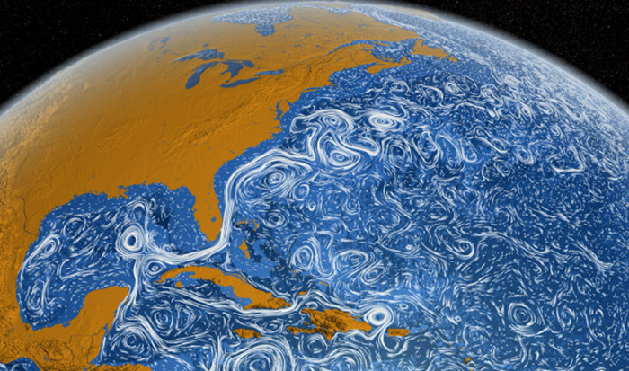

Dimensional analysis and the Reynolds number
Dimensional analysis and the Reynolds number¶
The viscosity is clearly never non-vanishing, but it appears that there are cases where we can ignore it. We would like to understand this in a more precise way. Saying “the viscosity is small” is insufficient, as \(\nu\) has dimensions of \((length)^2/(time)\), and it makes no sense to say that a dimensionful quantity is small (a centimeter is small for you but large for a bacterium, etc.)
For the Navier-Stokes equation with \({\vec F}_{ext} = 0\), \(\nu\) is the only dimensionful parameter. However, if we have a characteristic length scale \(L\) and and time scale \(T\), we can write \(Re \equiv T \nu/L^2\) as a dimensionless quantity.
In the context of fluid motion, let us set \({\vec u} = U {\vec V}\), where \(U\) is a velocity scale and \({\vec V} \sim {\cal O}(1)\). We set \({\vec x} = L {\vec \chi}\), and \(t = T \tau\), with \({\vec \chi},\tau \sim {\cal O}(1)\), and \(\rho = \rho_0 n\), \(n \sim {\cal O}(1)\). We further assume that \(U = L/T\), or \(T = L/U\). Using this scaling,
Dividing through by \(U^2/L\), we find:
if we set \(p' = p/(\rho_0 U^2)\) we get:
We define the Reynolds number as \(Re = \frac{UL}{\nu}\), where \(U\) is the characeristic velocity of the flow, and \(L\) the characteristic scale of the flow. Thus the viscosity is relatively unimportant when the Reynolds number is large, and dominates when the Reynolds number is small. One way to think about the Reynolds number is that it measures the relative strength of the “inertial term” \({\vec u} \cdot {\vec \nabla} {\vec u}\) and the “viscous term” \(\nu \nabla^2 {\vec u}\).
Another way to think about the Reynolds number is to consider an object of size \(L\) in a viscous fluid. In this case there is a natural velocity \(U_{visc} \sim \nu/L\), and the Reynolds number becomes the ratio \(Re = U/U_{visc}\).
High and low Reynolds numbers are qualitatively quite different. For example, as \(Re \to 0\) we can ignore the nonlinear inertial term, and \({\vec u} \to - {\vec u}\) becomes a symmetry of the equations. The flow is thus reversible. Put dye in a viscous fluid and slowly stir it and watch it mix. Then reverse the direction of stirring, and the dye will return to its original configuration as long as it is not also diffusing over the time scale of the experiment.
Low Reynolds number flows are important in many biological applications: the flow of blood, the swimming motion of bacteria and so on. High Reynolds number is the domain of highly turbulent motion.
What \(U\) and \(L\) means takes a little thought. For example, if the flow has features at a range of spatial scales, those features have different characteristic Reynolds numbers attached. In the flow past a cylinder we looked at earlier, the Reynolds number is high far from the cylinder, particularly in the turbulent wake behind the cylinder, while it is low in the thin layer close to the boundary where the boundary conditions set the velocity to zero.
We can see the effects of varying the Reynolds number by looking at flow past a cylinder with varying velocity:
Here you already see at \(Re = 10\) that a wake develops. One has to cank up the Reynolds number well past \(10^3\) to see fully developed turbulence:
Fluids in more complicated situations are controlled by a wider variety of dimensionless numbers. For example, on a sphere rotating witn angular frequency \(\Omega\), at latitude \(\phi\), the vertical projection of the angular velocity is \(f = \Omega \sin\phi\), and the Rossby number is \(Ro = U/L f\). In the ocean, \(Ro \sim 1\) is he boundaty between quasi-two-dimensional mesoscale turbulence between \((few) \times 10\) and \((few)\times 100\) km, and more three-dimensional submesoscale turbulence (where vertical velocities become important) at \(\lesssim (few)\times 10\)km.

Another use of this scaling is that since in dimensionless coordinates only the Reynolds number appears, we know that if we rescale \(L\), \(U\), and \(\nu\) so that the geometry of a configuration is the same and the Reynolds number does not change, the geometry of the flow is identical. Thus, for example, if we want to understand the behavior of the flow around a full-sized wing, or a boat in the water, we can do a laboratory experiment with a much smaller wing or model boat if we change \(L\) and \(\nu\) as well so that the Reynolds number does not change. For a nice discussion of the uses of similarity, see [Bolster et al., 2011].